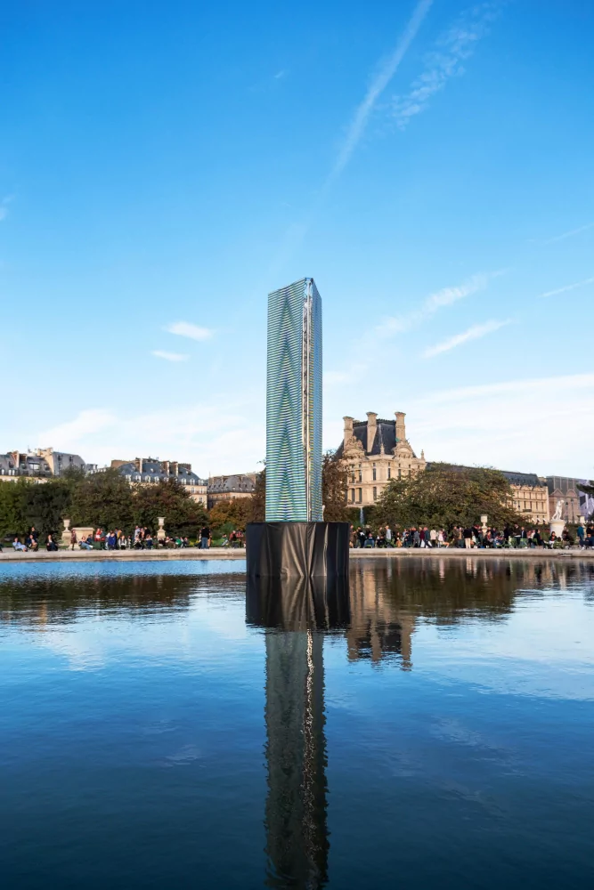
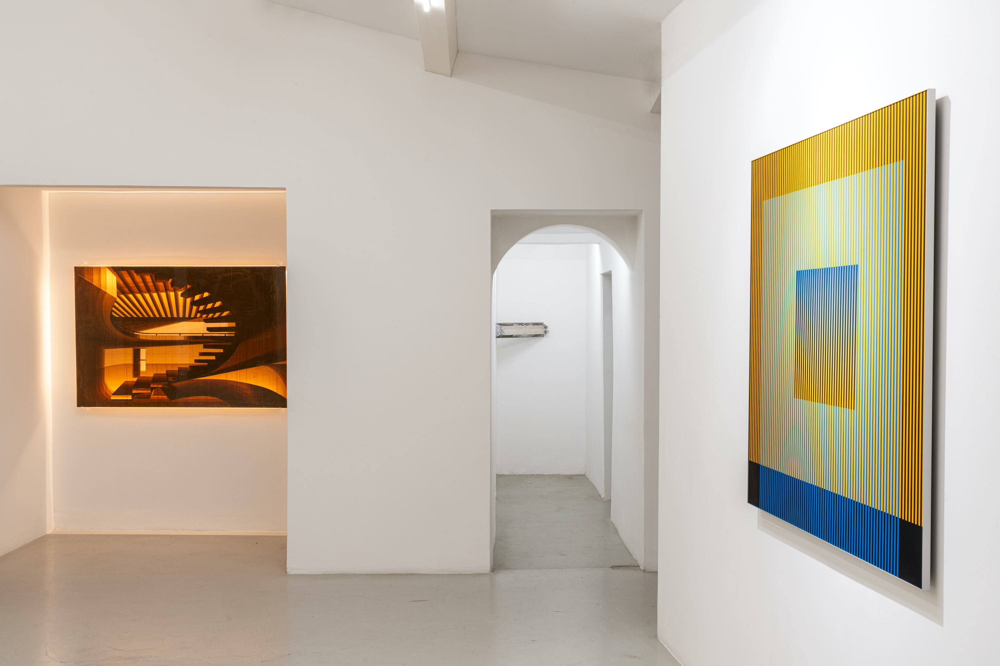
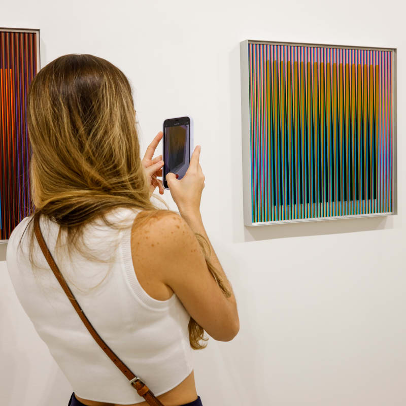
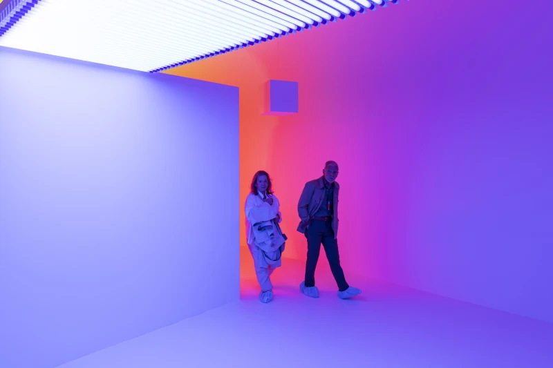
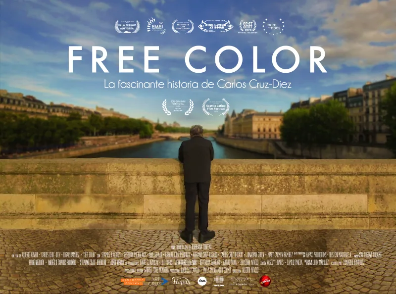
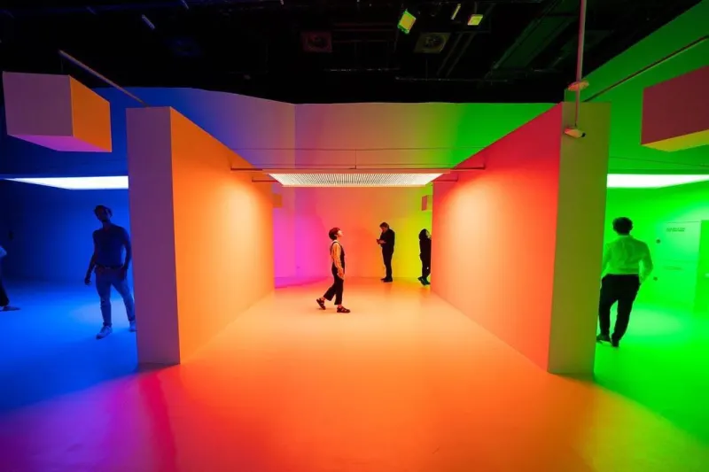

Entérate de los próximos eventos, exposiciones y todo lo referente al mundo del arte en torno al legado del maestro Cruz-Diez
-

Paris + by Art Basel
Para la primera edición de la feria de arte Paris+ by Art Basel, Galleria Continua presentará una obra monumental de Cruz-Diez en el corazón del jardín de las Tullerías. La obra, presentada en la sección Sites de la feria, es una columna de base triangular y 8 metros de altura. Cada uno de los tres lados de la obra lleva una armonía de Inducción Cromática diferente.
-

La capacidad de soñar
Con motivo del lanzamiento del documental "Galleria Continua. The Abiliy to Dream" (Sky Arte), la galería presenta una amplia exposición colectiva de sus artistas. La exposicion estará disponible durante todo el mes de Abril con la especial participacion de los almnos de la academia del maestro cruz diez ubicada en Panama, la galería presenta una amplia exposición colectiva de sus artistas.
-

Aniversario Carlos Cruz-Diez 2023
Este domingo 22 de agosto el museo ubicado en la ciudad de Caracas, estará abiertos al público a partir de las 10:00 a.m. hasta las 2:30 p.m. para poder disfrutar de un día de arte en nuestra más reciente muestra "Variación y percepción", realizada en el marco del mes aniversario del Maestro Carlos Cruz-Diez. Este domingo 22 de agosto el museo ubicado en la ciudad de Caracas.
-

Cromosaturación en el PAMM
El proximo 19 de junio llegará la más reciente Cromosaturación del Maestro Carlos Cruz-Diez al Pérez Art Museum Miami en Florida, USA. Esta obra inmersiva del Maestro del Color fue adquirida en el año 2020 para la colección del PAMM, con fondos proporcionados por Jorge M. Pérez. Cromosaturación crea un entorno inmersivo que replantea el color como una experiencia corporal.
-

Estreno de Free Color Movie en Venezuela
Free Color Movie, la fascinante historia del Maestro Carlos Cruz-Diez y su obsesión por liberar el color de la forma, fue estrenada en las principales salas de cine en Venezuela el próximo jueves 21 de Abril. Si estas en Venezuela, no te puedes perder la oportunidad de conocer a fondo una historia de exploración a manos de uno de los grandes Maestros que dedicó su vida a las investigaciones sobre el color.
-

Cromosaturación es la Expo Dubai 2023
Increíbles imágenes de la más reciente Cromosaturación del Maestro Carlos Cruz-Diez inaugurada este 12 de diciembre y que estará hasta el 15 de enero del 2022 en la France Dubai 2020 en Dubái, Emiratos Árabes Unidos. Esta obra insignia del Maestro del color fue creada en París en 1965 y consiste en un ambiente artificial que sumergen al espectador en una experiencia multisensorial